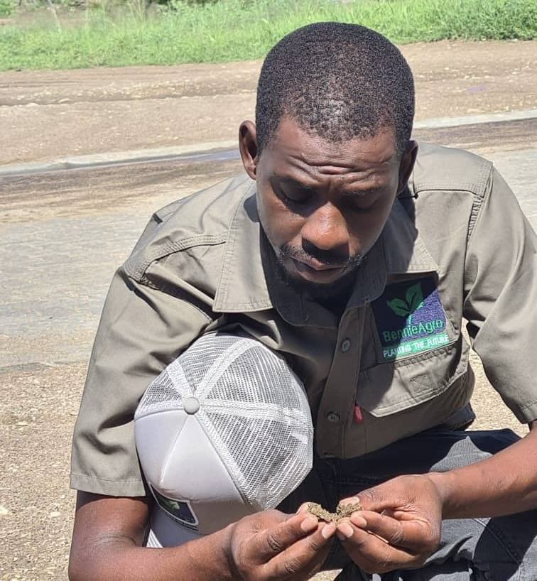
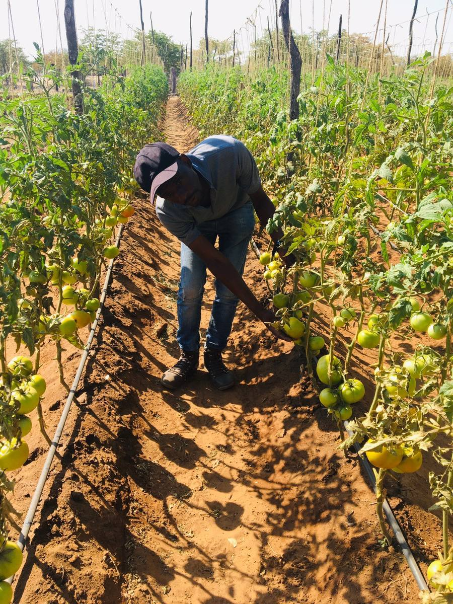

Building local skills that last
Participatory, accessible training grounded in the realities of each farming area — delivered in community fields, irrigation schemes, farms, schools or other local venues.
How we deliver training
Lasting agricultural development happens when communities gain practical skills, confidence and the ability to solve production challenges themselves.
- Community needs assessments — identify local priorities, production constraints, existing knowledge and resources with farmers and local leaders.
- Demonstration-based learning — field demonstrations, crop walks, soil and plant observations, practical exercises and simple comparisons of methods.
- Season-long farmer support — follow-up at land preparation, planting, crop growth, pest monitoring and harvest.
- Inclusive participation — women, young people, smallholders, livestock keepers and emerging producers.
- Peer learning & local champions — farmer groups and capable participants who keep sharing skills.
- Monitoring & feedback — review adoption, challenges and results, then adapt to local conditions.

Build your training programme
Tick the modules your group needs, then send us a request. Programmes can be tailored for community projects, irrigation schemes, farmer associations, development organisations and private-sector initiatives.
Stronger knowledge, fewer losses, more resilient livelihoods
We aim to strengthen local knowledge, improve the timeliness of farm decisions, reduce avoidable production losses, encourage resource-efficient practices and help communities build more resilient livelihoods.
Ready to grow?
Book a farm visit, request a quote or chat to us on WhatsApp.